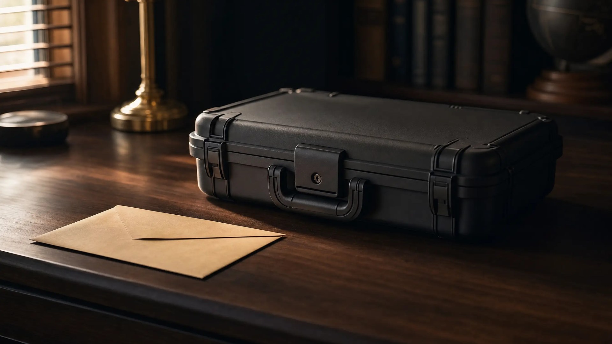

Can You Carry a Gun in Florida With Open Charges?

Can you carry a gun with open charges in Florida? If the charge is disqualifying, treat it as a bar: do not carry a concealed firearm, with or without a permit, until the case is resolved.
That applies whether you hold a concealed weapon license or rely on Florida's permitless carry law. Here is what the statutes say, what the suspension letter means, and how a license comes back.
Can you carry a gun with open charges in Florida?
Not if the charge is disqualifying. An open charge is a criminal case that has not reached final disposition. It is disqualifying if the arrest or formal charge is for a crime that would disqualify you from a Florida concealed weapon license.
- You hold a license: The state suspends it until the case is over. You cannot carry under a suspended license.
- You have no license: Permitless carry covers only people who meet the license criteria, and those criteria include the open-charge rule. Treat a disqualifying open charge as a bar.
The rule comes from state law, so it reads the same in Orange County as anywhere else in Florida.
Open charges are not open carry
An open charge is a pending criminal case. Open carry is a way of carrying a firearm. This post is about concealed carry while a case is pending.
Why did the state suspend my license?
If your concealed carry permit was suspended in Florida after an arrest, F.S. 790.06(3)(a) is the reason. The Florida Department of Agriculture and Consumer Services, or FDACS, must temporarily suspend a license when the holder is arrested or formally charged with a crime that would disqualify them. A pending application is suspended the same way.
FDACS acts when it is notified by a law enforcement agency, a court, a clerk's office, or the Florida Department of Law Enforcement. No conviction is needed. The suspension lasts at least until final disposition of the case, and longer if the outcome is disqualifying.
Because the suspension follows that notice, it may not start the day you are arrested. Do not read the gap as permission. If the charge is disqualifying, do not carry.
The same subsection also requires a suspension when a court issues an injunction against domestic violence or repeat violence.
Which charges count?
The statute does not list offenses by name. It lists license criteria, and a charge counts if the crime would put you outside them. The main groups:
- Any felony: a felony conviction makes you ineligible under F.S. 790.06(2)(d). A withheld adjudication or suspended sentence on a felony also counts until 3 years after probation or other court conditions are fulfilled, or the record is expunged, under (2)(k).
- Crimes of violence: a guilty finding, withheld adjudication or suspended sentence for a misdemeanor crime of violence bars a license until 3 years after probation or other court conditions are fulfilled, or the record is sealed or expunged, under (3)(a).
- Domestic violence: a withheld adjudication or suspended sentence on a misdemeanor crime of domestic violence counts the same way under (2)(l).
- Drug crimes: a guilty finding under chapter 893 within the 3 years before an application, or a commitment for controlled-substance abuse, under (2)(e).
- Repeat DUI: two or more DUI convictions under F.S. 316.193 within the 3 years before an application create a presumption of chronic impairment under (2)(f). For a license holder, a second DUI conviction within 3 years of the first is also a ground for suspension or revocation under (10)(f).
Other criteria include an incapacity ruling, a commitment to a mental institution, a current domestic violence or repeat violence injunction, and any other state or federal firearms ban. Not every open case meets the test, so the exact charge matters.
I don't have a permit. Does this apply to me?
Yes, treat it that way. Permitless carry under F.S. 790.01(1)(b) covers a person who otherwise meets the criteria for receiving and maintaining a license. Those criteria include F.S. 790.06(3), the subsection that holds the open-charge rule. So permitless carry with pending charges in Florida is not an option if the charge is disqualifying.
Without a license, FDACS sends you nothing. There is no license to suspend, so no letter arrives to tell you the rule now applies.
Subsection (4) sets how a case is proved. The state must prove that you are not licensed and that you are ineligible under the listed criteria.
A burden of proof is not permission to carry
The state's burden describes what it must prove at trial. It does not make carrying lawful. If you are ineligible and you carry concealed, you risk a new charge.
What if I get caught carrying?
Carrying a concealed firearm when you do not meet subsection (1) is a third-degree felony under F.S. 790.01(3). That new charge would sit on top of the case you already have.
Carrying another concealed weapon, or an electric weapon or device, is a first-degree misdemeanor under subsection (2). Subsection (5) has narrow exceptions: carrying during a mandatory evacuation, and carrying a self-defense chemical spray or a nonlethal stun device for lawful self-defense.
A drug case can raise its own gun issues. See when marijuana charges trigger felony weapons offenses.
What does the letter mean?
It means your license is suspended. Under F.S. 790.06(3)(a), the department must notify a suspended licensee or applicant of the right to a hearing under chapter 120 of the Florida Statutes.
The Legislature calls these suspensions temporary. Temporary does not mean optional. While the suspension stands, you cannot carry under that license.
How do I get the license back?
If the case ends in a nondisqualifying disposition and you are otherwise eligible, the suspension ends. Send a copy of the final resolution by electronic or certified mail to the location named on the notice of suspension.
The department must then issue an order confirming the end of the suspension within 90 days after it receives your copy.
A disqualifying disposition goes the other way. The suspension stays in place, and the department proceeds with denial or revocation under chapter 120.
How a Criminal Defense Attorney Can Help
Whether your charge is disqualifying depends on the exact offense, and the outcome of the case decides whether you keep your license or your ability to carry. A defense attorney works the case with that result in mind.
You can read more about our Florida weapons charges defense. Whether a firearm was concealed at all is a separate question, covered in securely encased vs. concealed on the person. Every case turns on its own facts.
This post is general information, not legal advice for your case.
Facing Criminal Charges in Florida?
You need a defense attorney working on your case.
Contact Lotter Law at 407-500-7000.
Jeff Lotter
Criminal Defense Attorney | Former State Trooper
Jeff Lotter is an Orlando criminal defense attorney and former Florida Highway Patrol trooper. He uses his law enforcement background to build stronger defenses for clients facing criminal charges.
Related Articles
Securely Encased vs. Concealed on the Person in Florida (Body-Cam Case Study)
When Marijuana Charges Trigger Felony Weapons Offenses in Florida
Securely Encased or Concealed Carry? How We Got Firearms Charges Dismissed
A 19-year-old with a legally owned firearm in a zippered bag beat felony concealed carry charges. Learn about Florida's securely encased fir…
"I Forgot It Was in My Bag": Firearm in Carry-On at Orlando Airport
What happens when TSA finds a firearm in your carry-on at Orlando MCO? Learn about federal charges, Florida prosecution, and defense options…